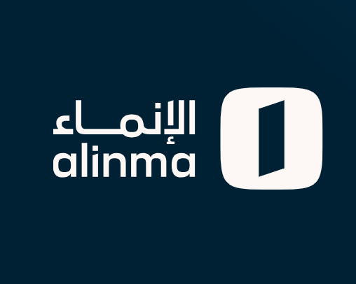
الإنماء · Alinma Bank
alinmabusiness
source
200; script-only Angular app (no listings in HTML); linked from alinma.com home
بنك الإنماء
الإنماء
الانماء
مصرف الانماء
بنك الانماء
alinma
alinma bank
about = the home page meta description (cut after its first clause).
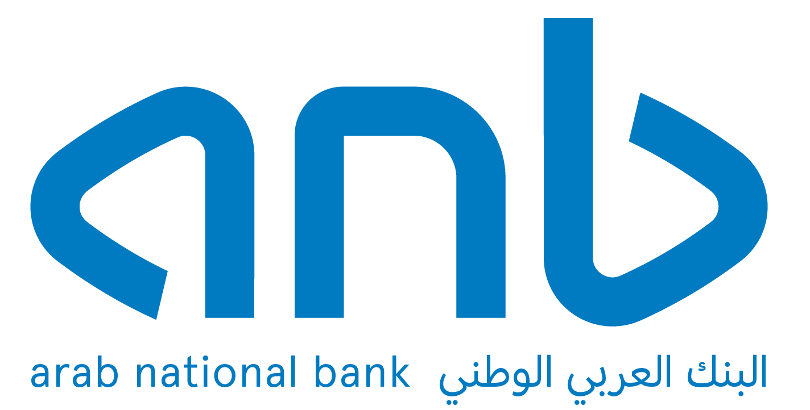
العربي الوطني · Arab National Bank
anbbusiness
source
200; ANB careers site (Talentera ATS, a Bayt product); roles not collected because of the no-Bayt rule
العربي الوطني
البنك العربي
بنك العربي الوطني
anb
arab national bank
anb bank
alone: العربي
anb.com.sa answers some URLs with a 'website under maintenance' page (e.g. its og:image URL); /ar/web/anb works. about condensed from its footer.
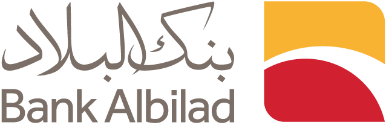
بنك البلاد · Bank Albilad
bank-albiladbusiness
source
200; careers page; its jobs page (/ar/about/pages/jobs.aspx) says «عذراً، لا يوجد وظائف متاحة للعرض»; applications go through its Oracle iRecruitment site irecruitment.bankalbilad.com.sa (not opened)
مصرف البلاد
bank albilad
albilad
albilad bank
al bilad bank
alone: البلاد
«البلاد» alone = everyday word (the country), so only in aliasesAlone. bankalbilad.com redirects to bankalbilad.com.sa.
بنك الجزيرة · Bank AlJazira
bank-aljazirabusiness
—
200; 'Career portal' (Elevatus ATS, script-only, listings not in HTML)
مصرف الجزيرة
bank aljazira
aljazira bank
bank al jazira
baj
alone: الجزيرة
fields inferred
bankaljazira.com redirects to aljazirabank.com.sa/en-us, which serves an obfuscated JavaScript bot challenge instead of content: skipped (no about, no logo, source null). Arabic name «بنك الجزيرة» NOT verified on its own site. «الجزيرة» alone = everyday word + Al Jazeera channel.
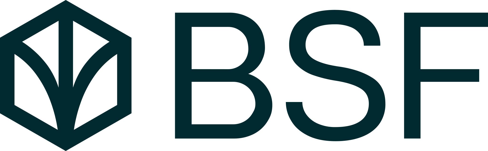
السعودي الفرنسي · Banque Saudi Fransi
bsfbusiness
source
200; BSF's own Oracle Recruiting Cloud site (linked from bsf.sa home); 0 open jobs on check (site API TotalJobsCount 0)
السعودي الفرنسي
البنك الفرنسي
بنك الفرنسي
bsf
banque saudi fransi
saudi fransi
alfransi
al fransi
alone: الفرنسي
alfransi.com.sa redirects to bsf.sa. about condensed from the home-page footer (public company, licensed by royal decree, Riyadh) and its menus (personal/corporate banking).
D360 · D360 Bank
d360careers-page
source
200; D360's own Oracle Recruiting Cloud site (linked from d360.com); 13 open roles on check, all Riyadh
بنك دي 360
دي 360
d360
d360 bank
d360bank
السعودي للاستثمار · The Saudi Investment Bank
saibbusiness
source
200; SAIB careers site (Talentera ATS, a Bayt product); roles not collected because of the no-Bayt rule
السعودي للاستثمار
بنك السعودي للاستثمار
saib
saudi investment bank
the saudi investment bank
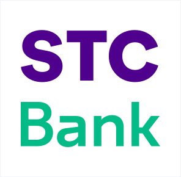
STC Bank · STC Bank
stc-bankbusiness
source
200; «التقديم لوظيفة في STC Bank» application form (no listings)
بنك اس تي سي
بنك إس تي سي
بنك stc
stc bank
stcbank
اس تي سي بنك
Formerly stc pay (site links a 'notice of transformation to STC Bank'). Do not add a bare «stc» alias (clashes with existing id stc). Arabic name from its footer «© 2026 بنك إس.تي.سي».
برق · barq
barqbusiness
source
no careers link on barq.com home (/careers = 404); none found by web search
برق المالية
شركة براق المالية
barq app
barq.com
alone: برق، barq
Legal entity per its footer: «شركة براق المالية» (closed joint-stock, Riyadh). «برق» alone = lightning (everyday word).
جيديا · Geidea
geideabusiness
source
no careers link on geidea.net/ksa/ar home; /ksa/ar/careers = 404
جيدية
geidea
geidea.net
هلا · HALA
halabusiness
source
200; script-only app (listings load from an API that requires a client header: not used)
هلا للمدفوعات
هلا للشركات
هلا بلس
hala.com
hala app
hala payments
alone: هلا، hala
«هلا»/«hala» alone = everyday greeting, so only in aliasesAlone.
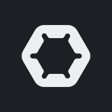
لين تك · Lean Technologies
lean-techpostings
source
200; careers page lists 8 open roles on its Ashby board (jobs.ashbyhq.com/LeanTech); the 3 Riyadh roles are all senior/staff, so no roles recorded
لين تك
لين للتقنية
lean technologies
lean tech
leantech
leantech.me
alone: لين، lean
Open-banking fintech (NOT Lean health / Lean Business Services). Site is English-only: Arabic name/short are transliterations, not from its site. «لين»/«lean» alone also = Lean health and an everyday word, so only in aliasesAlone. leantech.me redirects by region (/uae/en, /ksa/en).
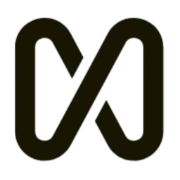
ميسر · Moyasar
moyasarpostings
source
200; careers page lists open roles; its Workable board reports 11 open roles, mostly Riyadh
ميسر للمدفوعات
شركة ميسر المالية
moyasar
alone: ميسر
رسن · Rasan
rasanbusiness
source
200; 'Shape the Future with Us - Rasan' (Teamtailor career site; jobs at careers.rasan.co/jobs, not opened)
شركة رسن
rasan
rasan.co
alone: رسن
Extra. rasan.co redirects to /en. «رسن» alone is also an everyday word (halter), so only in aliasesAlone.
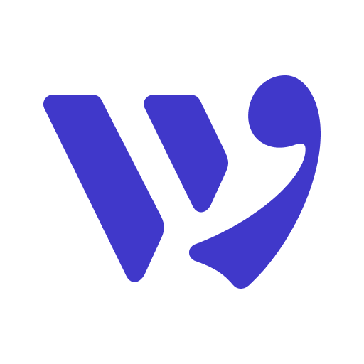
وافق · Wafeq
wafeqbusiness
source
200; Teamtailor career site linked from wafeq.com; 1 job seen (Partner Success Manager)
wafeq
alone: وافق
«وافق» = 'agreed' (everyday word) -> aliasesAlone. Sector fintech (accounting software); change to tech if preferred.
تكافل الراجحي · Al Rajhi Takaful
alrajhi-takafulbusiness
source
200; script-only app (same platform shell as career.alinma.com; no listings in HTML); linked from alrajhitakaful.com home
الراجحي تكافل
الراجحي للتأمين التكافلي
شركة الراجحي للتأمين التكافلي
al rajhi takaful
alrajhi takaful
Extra. Name as in its title «شركة الراجحي للتأمين التكافلى» (site spells final ى; normalised to ي). Keep separate from existing id alrajhi (the bank): do not add bare «الراجحي».
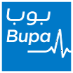
بوبا · Bupa Arabia
bupa-arabiabusiness
source
200; 'Careers at Bupa Arabia' (Talentera ATS, a Bayt product); roles not collected because of the no-Bayt rule
بوبا
بوبا للتأمين
بوبا العربية للتأمين
bupa arabia
bupa
bupa.com.sa
bupa.com.sa/ar/careers exists as a route but renders client-side only; careers.bupa.com.sa found via web search and opened.
التعاونية · Tawuniya
tawuniyabusiness
source
tawuniya.com is a script-only app; /ar/careers returns the same app shell (no content); no own careers board found
شركة التعاونية للتأمين
تأمين التعاونية
التعاونيه للتأمين
tawuniya
tawuniya insurance
alone: التعاونية، التعاونيه
Official name on its site: «شركة التعاونية للتأمين». «التعاونية» alone = everyday word (cooperative).
كريم · Careem
careemcareers-page
source
200; Saudi careers page (also /ar-sa/careers/), links to jobs.careem.com (200, script-only app; roles not read)
كريم السعودية
careem
careem ksa
alone: كريم
مزن · MOZN
moznpostings
source
200; Workable board linked from mozn.ai/careers; API total 18 openings (mostly Riyadh)
مزن للذكاء الاصطناعي
mozn
mozn ai
alone: مزن، مُزن
mozn.sa redirects to mozn.ai. Arabic name «مُزن» seen on its Arabic page. About line partly translated from the English meta description, with the KYC/AML line from the Arabic page. «مزن» = rain clouds -> aliasesAlone. No logo: header logo is white/cyan on dark (text near-white).
مرسول · Mrsool
mrsoolpostings
source
200; Workable board linked from mrsool.co footer; API total 12 openings (Riyadh, Cairo, remote India)
mrsool
mrsool app
alone: مرسول
No Arabic site found (mrsool.co/ar/ is 404); about line translated/condensed from the English home-page description. Arabic name «مرسول» appears once in its home-page HTML. «مرسول» = messenger -> aliasesAlone.
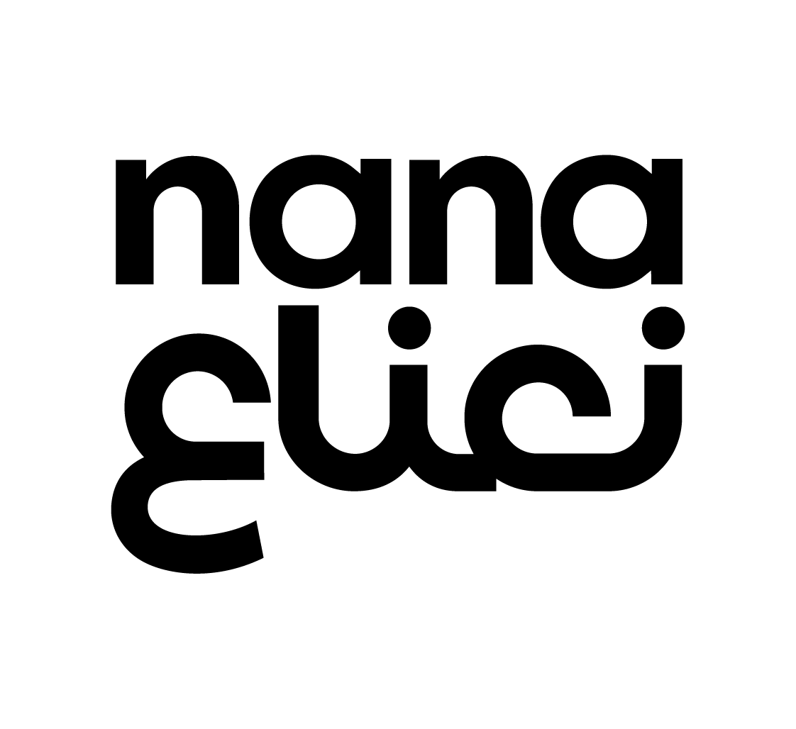
نعناع · Nana
nanabusiness
source
200; Arabic careers page («انضم لعائلة نعناع»), 'استكشف الوظائف' links to https://hiring.nana.co/jobs which timed out (no response) twice
نانا
nana
nana app
alone: نعناع
Brand writes itself «Nana نعناع». «نعناع» = mint (everyday word) -> aliasesAlone. «نانا» kept in aliases per the caller's note (it can also be a nickname; move to aliasesAlone if it misfires). About line is the careers page's own description (home page only has a slogan).
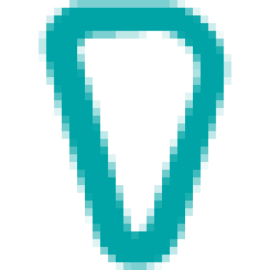
رواء · Rewaa
rewaabusiness
source
200; Arabic careers page «وظائف | رواء» embeds Lever board jobs.lever.co/rewaatech, which answers 404 and its API returns [] (0 openings)
شركة رواء
برنامج رواء
rewaa
rewaatech
rewaa tech
alone: رواء
Home www.rewaatech.com redirects to rewaa.com. Legal name from its footer: «شركة رواء التقنية لتقنية المعلومات». «رواء» is also a word/female name -> aliasesAlone. Logo is the favicon mark (SECONDARY_LOGO.png is white-only).
ساري · Sary
sarybusiness
source
sary.com footer links to https://sary.zenats.com/en/careers_page, which answers 404 (the zenats.com root is the ATS vendor's marketing page)
ساري للجملة
sary
sary app
alone: ساري
The prompt's sary.sa is NOT this company (it is an events firm 'Saryevent'); Sary's own site is sary.com. «ساري» = valid/running -> aliasesAlone.
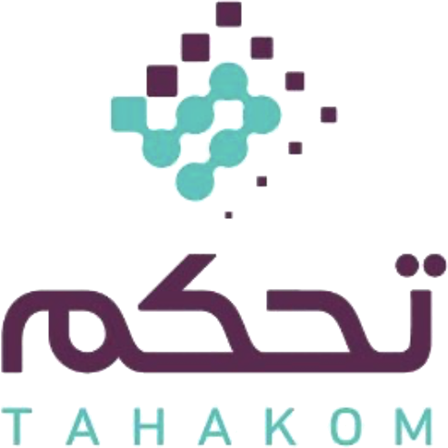
تحكم · Tahakom
tahakombusiness
source
200; 'Saudi Technology and Security Careers' SuccessFactors site with Graduate Development Program, Cooperative Training and Tamheer pages; its job search (careers.tahakom.com/search/?q=) shows no open positions today
tahakom
saudi technology and security
alone: تحكم
fields inferred
Arabic name «تحكم» read from its logo image (tahakom.com/ar is 404). «تحكم» = 'control' (everyday word) -> aliasesAlone. About translated from the English meta description.
تكامل · Takamol Holding
takamolbusiness
source
200; Arabic 'التوظيف في تكامل القابضة' page with the «تكاملي طموح» fresh-graduate program; no ATS link found in its HTML
شركة تكامل القابضة
takamol
takamol holding
alone: تكامل
«تكامل» = 'integration' (everyday word) -> aliasesAlone. No logo: its logo SVG is white-only (fill #fff).
تمكين للتقنيات · Tamkeen Technologies
tamkeen-techbusiness
source
200; 'Careers at Tamkeen Technologies' with sub-pages ./careers/open-opportunities and ./careers/training (not opened)
شركة تمكين للتقنيات
tamkeen technologies
tamkeen tech
tamkeentech
alone: تمكين
«تمكين» alone is an everyday word (empowerment) -> aliasesAlone. No logo saved (header logo not found as a file; not checked further).
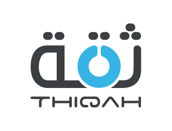
ثقة · Thiqah Business Services
thiqahcareers-page
source
200; Arabic careers page; its 'jobs' link https://careers.thiqah.sa/?langcode=ar timed out (no response) twice
شركة ثقة
thiqah
thiqah business services
alone: ثقة
يونيفونك · Unifonic
unifonicpostings
source
200; careers page loads its list from its Recruitee board (jobs.unifonic.com, 200); API shows 13 openings (Riyadh, Amman, Cairo)
يونيفونيك
unifonic
زد · Zid
zidbusiness
source
No careers link in zid.sa header/footer; https://zid.sa/careers redirects to /ar/careers/ which serves a generic page (title 'Zid | Create your online store...'), not a careers page
منصة زد
متاجر زد
zid
zid.sa
alone: زد
«زد» = 'add' (everyday word) -> aliasesAlone. Logo is the icon mark (the full Arabic wordmark logo-ar.svg is white-only).
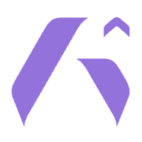
أكوا · ACWA Power
acwa-powerpostings
source
200; SAP SuccessFactors career site, search shows 88 openings (many in SA, also UZ/OM)
اكوا باور
أكوا
اكوا
شركة أكوا
acwa power
acwa
acwapower
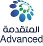
المتقدمة · Advanced Petrochemical Company
advanced-petrochempostings
source
200; SuccessFactors career site linked from advancedpetrochem.com/career/; 1 opening (Utility Process Engineer, Jubail)
المتقدمة للبتروكيماويات
advanced petrochemical
advanced petrochemical company
advanced petrochem
alone: المتقدمة
سبكيم · Sipchem (Saudi International Petrochemical Company)
sipchembusiness
—
www.sipchem.com/ar -> 403 Cloudflare 'Just a moment...'; skipped. careers.sipchem.com and sipchem.is.sa (seen in search results) did not resolve
سبكم
الشركة السعودية العالمية للبتروكيماويات
العالمية للبتروكيماويات
sipchem
saudi international petrochemical company
fields inferred
Own site behind a Cloudflare bot check: Arabic name and aliases are the widely used public names, NOT verified on its own site; integrator may drop or keep with care.
التصنيع · Tasnee (National Industrialization Company)
tasneebusiness
source
200; careers page with 'استكشف الوظائف الشاغرة' linking to https://jobs.tasnee.com/search (200, 'There are currently no open positions')
التصنيع الوطنية
tasnee
national industrialization company
alone: التصنيع
Site brands itself «التصنيع» (title); the long form «الشركة الوطنية للتصنيع» was not seen on the pages read (English board says 'National Industrialization Company (Tasnee)'). «التصنيع» = 'manufacturing' -> aliasesAlone; «تصنيع» in aliases may be too generic - integrator may drop it.
المياه الوطنية · National Water Company
nwcbusiness
source
200; company careers page linking to Oracle Recruiting site (CX_1 -> CX_1001, 'NWC Career Site'), 0 open requisitions via its public API
المياه الوطنية
national water company
nwc
About line trimmed from the careers page meta description.
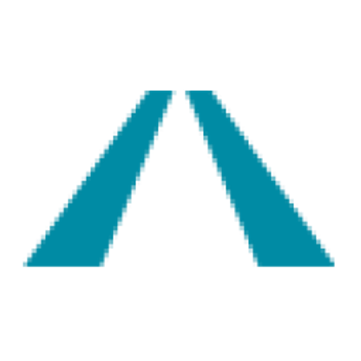
سار · Saudi Arabia Railways (SAR)
sarbusiness
source
No careers link in sar.com.sa menu/footer; /careers/ falls back to the home page (SPA). Not recorded.
الخطوط الحديدية السعودية
سار للقطارات
قطار سار
saudi arabia railways
saudi railway company
sar railways
alone: سار
About line is the site's own short Arabic meta description. Arabic legal name seen once on the Arabic site. «سار» alone is also a verb/word -> aliasesAlone.
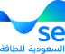
السعودية للطاقة · Saudi Energy (Saudi Electricity Company)
secbusiness
source
200; SuccessFactors career site 'التوظيف لدى السعودية للطاقة'; search page showed no rows. Company careers page https://www.se.com.sa/ar-SA/Careers (200) advertises ITP: application 2026/11/15-2026/12/15
السعودية للكهرباء
شركة الكهرباء
السعودية للطاقة
saudi electricity company
saudi electricity
saudi energy
sec
Saudi Electricity Company has rebranded as «السعودية للطاقة» / 'Saudi Energy' (site title); legal name «الشركة السعودية للكهرباء» still appears on its pages. Kept id 'sec'. «سعودي إلكتريك»-style bare names avoided.
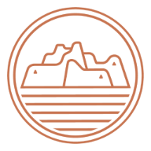
الدرعية · Diriyah Company
diriyahbusiness
source
200; careers page links to SAP SuccessFactors (career23.sapsf.com, company=thediriyah, loginFlowRequired) - no public list read
شركة تطوير الدرعية
diriyah company
diriyah co
alone: الدرعية
diriyah.sa is the visitor destination site; corporate site is diriyahcompany.sa. careers.diriyah.sa is a deactivated site (410). «الدرعية» is a place -> aliasesAlone.
حديقة الملك سلمان · King Salman Park
king-salman-parkbusiness
source
200; careers page ('التوظيف' in menu) links to Oracle Recruiting CX_1 (fa-euri-saasfaprod1); 0 open requisitions via its public API
مؤسسة حديقة الملك سلمان
king salman park
ksp
www.kingsalmanpark.sa does not resolve; bare domain works. About line trimmed from home meta description.
المربع الجديد · New Murabba Development Company
new-murabbabusiness
source
200; careers page linking to Oracle 'New Murabba Career Website' (careers.newmurabba.com, CX_3001); 0 open requisitions via its public API
المربع الجديد
مشروع المربع الجديد
new murabba
newmurabba
«المكعب» (The Mukaab, its flagship building) = 'the cube' -> aliasesAlone only; drop if unwanted.

هيئة العلا · Royal Commission for AlUla
rcubusiness
source
200; 'ندعوك لاستكشاف وظائف الهيئة الملكية لمحافظة العلا' - listing not in page HTML
الهيئة الملكية للعلا
هيئة العلا
royal commission for alula
rcu
alone: العلا
Government body. «العلا» is a place -> aliasesAlone.
السودة للتطوير · Soudah Development
soudahbusiness
—
soudah.sa -> 403 Cloudflare 'Just a moment...'; careers.soudah.sa did not resolve; skipped
شركة السودة للتطوير
soudah development
soudah
alone: السودة
name not seen
fields inferred
Own site behind Cloudflare: official Arabic name not verified (name left null). «السودة» is a place -> aliasesAlone.
هيئة السياحة · Saudi Tourism Authority
stabusiness
source
200; page shell, job list loads from an API (errored in raw HTML); nothing listed
هيئة السياحة
saudi tourism authority
sta
About line paraphrased from the Arabic home meta description (site has little Arabic about text in raw HTML).
المسافر · Almosafer
almosaferpostings
source
200; SuccessFactors board linked from corporate.almosafer.com/ar/careers; 18 openings (Riyadh, Unaizah, Amman, Cairo)
المسافر للسفر
almosafer
al mosafer
alone: المسافر، مسافر
طيران أديل · flyadeal
flyadealcareers-page
source
200; Elevatus-powered career portal 'Careers at flyadeal / الوظائف في طيران أديل'; job list loads by script (none read)
طيران اديل
فلاي أديل
فلاي اديل
flyadeal
fly adeal
alone: أديل، اديل
www.flyadeal.com/ar -> 403 Cloudflare; only the careers subdomain was readable. About line and Arabic name taken from the careers page title «الوظائف في طيران أديل – انضم إلى شركة الطيران الاقتصادي في السعودية». Logo there is white-only.
طيران ناس · flynas
flynasbusiness
—
www.flynas.com/ar and career.flynas.com -> 403 Cloudflare 'Just a moment...'; skipped
فلاي ناس
flynas
fly nas
alone: ناس
fields inferred
Own site behind Cloudflare; Arabic name not verified on its site. «ناس» = 'people' -> aliasesAlone.
طيران الرياض · Riyadh Air
riyadh-airbusiness
—
www.riyadhair.com -> 403 Akamai 'Access Denied'; its iCIMS board careers-riyadhair.icims.com -> 405 'Human Verification'. Both skipped
riyadh air
riyadhair
fields inferred
All own pages behind bot checks; Arabic name is the public name, not verified on its site.
الخطوط السعودية · Saudia
saudiapostings
—
200; 'Jobs at Saudia Group' SuccessFactors site (Saudia Airlines, Saudia Technic, etc.); several openings listed
الخطوط الجوية العربية السعودية
الخطوط الجوية السعودية
مجموعة السعودية
saudia
saudia airlines
saudi airlines
saudia group
www.saudia.com serves an Imperva 'Pardon Our Interruption' bot page -> home/about not read; Arabic name not verified on its own site. Bare «السعودية» (country name) deliberately NOT added, per brief. «مجموعة السعودية» is the group name used on the careers site ('Saudia Group').
سيرا · Seera Group
seerabusiness
source
seera.sa has no own careers page (/ar/careers/ = 404); the only careers link is LinkedIn, which we do not use
سيرا القابضة
مجموعة الطيار
مجموعة الطيار للسفر
seera
seera group
alone: سيرا
«سيرا» is also an everyday word (= biography/conduct) -> aliasesAlone. Almosafer (its brand) is a separate record.
أمريكانا · Americana Restaurants
americanabusiness
source
200; 'Careers at Americana Restaurants' page linking to Oracle 'Americana Global Career Site' (CX_3002), 1 open requisition via its public API (Egypt)
أمريكانا
امريكانا
امريكانا للمطاعم
americana
americana restaurants
americana-restaurants.com (with hyphen) is a parked/redirect domain (JS redirect to /lander) - do NOT use it; the real site is americanarestaurants.com. About line trimmed from a news sentence on the Arabic home page.
بن داود · BinDawood Holding
bindawoodbusiness
source
200; careers page; its 'Careers' menu link goes to the Mehan online application (mehan.bindawood.com, 200, script-only 'Online Application / VACANCIES' page); roles not read
بن داوود
بن داود القابضة
أسواق بن داود
الدانوب
اسواق الدانوب
bindawood
bin dawood
bindawood holding
danube
«الدانوب»/«danube» is its second store brand (Danube), owned by BinDawood Holding per its Arabic page; drop those aliases if Danube should be separate. About line lightly corrected for grammar (site: «علاماتان تجاريتان فريدتان من نوعهما»). No logo: header logo SVG is white except a tiny blue part; favicon 32 px.
إكسترا · eXtra (United Electronics Company)
extrabusiness
source
No careers link in the extra.com home-page HTML; https://www.extra.com/ar-sa/careers answers 404; careers.extra.com gave no response
إكسترا للإلكترونيات
اكسترا للالكترونيات
إكسترا السعودية
الشركة المتحدة للإلكترونيات
extra stores
united electronics
united electronics company
extra.com
alone: اكسترا، إكسترا، extra
Legal name from its footer: «الشركة المتحدة للإلكترونيات – اكسترا». «اكسترا»/«extra» are everyday words -> aliasesAlone. About line condensed from its Arabic meta description.
جرير · Jarir Bookstore
jarirbusiness
source
No careers link in the jarir.com home-page HTML; https://www.jarir.com/sa-ar/careers answers 404; careers.jarir.com gave no response
مكتبة جرير
شركة جرير للتسويق
jarir
jarir bookstore
Footer: «جميع الحقوق محفوظة لمكتبة جرير ... (شركة جرير للتسويق)». About line built from its own title and (truncated) meta description. www.jarir.com/sa-ar/ answers 404; the root www.jarir.com serves the Arabic store.
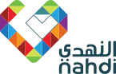
النهدي · Nahdi Medical Company
nahdipostings
source
200; Oracle Recruiting board linked from nahdi.sa as 'Careers' / «التوظيف»; public API shows 22 openings
صيدليات النهدي
صيدلية النهدي
النهدي الطبية
nahdi
al nahdi
nahdi medical
nahdi pharmacy
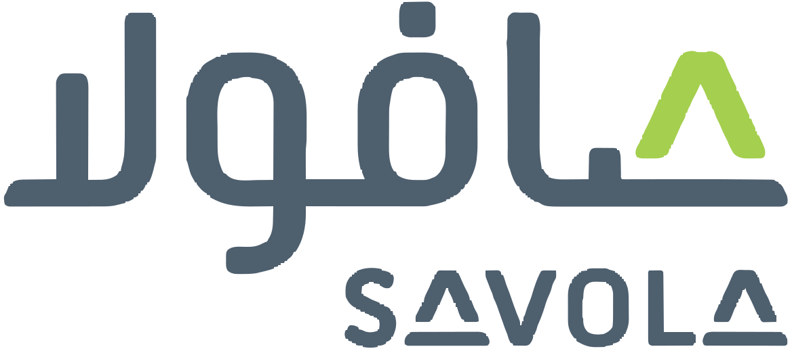
صافولا · Savola Group
savolapostings
source
200; Oracle Recruiting site titled «موقع توظيف صافولا» linked from savola.com; public API: 82 open requisitions (few in Saudi Arabia)
صافولا
صافوله
savola
savola group
دله · Dallah Health
dallah-healthbusiness
source
200; 'Career portal' (Elevatus ATS, script-only, listings not in HTML); linked from dallahhealth.com home
دلة الصحية
مستشفى دله
مستشفى دلة
مستشفيات دله
شركة دله للخدمات الصحية
dallah health
dallah hospital
dallah healthcare
dallah
alone: دله، دلة
fields inferred
about translated from its meta description (the Arabic page carries the same English line). Name as in its footer «جميع الحقوق محفوظة لدله الصحية». dallah-hospital.com is its hospitals site (title «مستشفى دله»).
سليمان الحبيب · Dr. Sulaiman Al Habib Medical Group
hmgbusiness
source
200; 'Career portal' (Elevatus ATS, script-only, listings not in HTML). Found via web search, not linked from the hmg.com home page HTML
مستشفى الحبيب
مستشفى سليمان الحبيب
سليمان الحبيب
د. سليمان الحبيب
الدكتور سليمان الحبيب
مجموعة الحبيب الطبية
hmg
dr sulaiman al habib
sulaiman al habib
al habib medical group
alone: الحبيب
hmg.com/ar/Pages/Careers.aspx = 404. «الحبيب» alone = common family name / everyday word, so only in aliasesAlone.
لين · Lean Business Services
lean-healthbusiness
source
200; careers page «ابدأ رحلتك المهنية معنا»; its job board careers.lean.sa/jobs (Odoo) lists no openings: 'Contact us for job opportunities.'
شركة لين لخدمات الأعمال
لين الصحية
lean business services
lean health
lean.sa
NOT Lean Technologies (lean-tech). Name from its footer «حقوق الطبع والنشر لشركة لين لخدمات الأعمال». Bare «لين» deliberately not used as an alias (taken by lean-tech / everyday word).
المواساة · Mouwasat Medical Services
mouwasatbusiness
source
no careers link in mouwasat.com menus; /ar/careers and /en/careers = 404 (route exists in its scripts but page not found)
المواساة الطبية
شركة المواساة الطبية
شركة المواساة للخدمات الطبية
مستشفيات المواساة
mouwasat
mouwasat hospital
mouwasat medical services
alone: مواساة، المواساة
Do not confuse with New Mowasat Hospital (Kuwait). «مواساة» = everyday word (consolation), so only in aliasesAlone. Name as its own site writes it («تأسست شركة المواساة الطبية بالدمام»); the listed-company name «شركة المواساة للخدمات الطبية» (seen only in web search results) is kept as an alias.
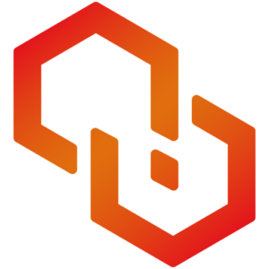
نوبكو · NUPCO
nupcobusiness
source
200; careers page «التوظيف» describing its hiring journey; no listings or ATS link on the page
الشركة الوطنية للشراء الموحد
نوبكو للإمداد الصحي
nupco
national unified procurement company
Full Arabic name «الشركة الوطنية للشراء الموحد» is not written on the pages I opened (they use «نوبكو»); its LinkedIn slug says 'national unified procurement medical supplies company'. Verify before showing.
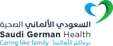
السعودي الألماني · Saudi German Health
saudi-german-healthcareers-page
source
200; careers site 'Join Our Family' with job categories; job search runs on its Taleo board (aa303.taleo.net/careersection/sgh_external), which timed out on check
المستشفى السعودي الألماني
مستشفى السعودي الألماني
مجموعة مستشفيات السعودي الألماني
السعودي الالماني
saudi german health
saudi german hospital
sgh
هدف · Human Resources Development Fund (HRDF)
hrdfbusiness
source
200; «التوظيف الحالي» page: «نأسف لا يوجد وظائف متاحة في الوقت الحالي» (last updated 30 Oct 2025). Join-us page: https://www.hrdf.org.sa/about/joinus/
صندوق هدف
صندوق الموارد البشرية
hrdf
hadaf
alone: هدف
About line trimmed from home meta description (decision number/date removed). «هدف» = 'goal' -> aliasesAlone.
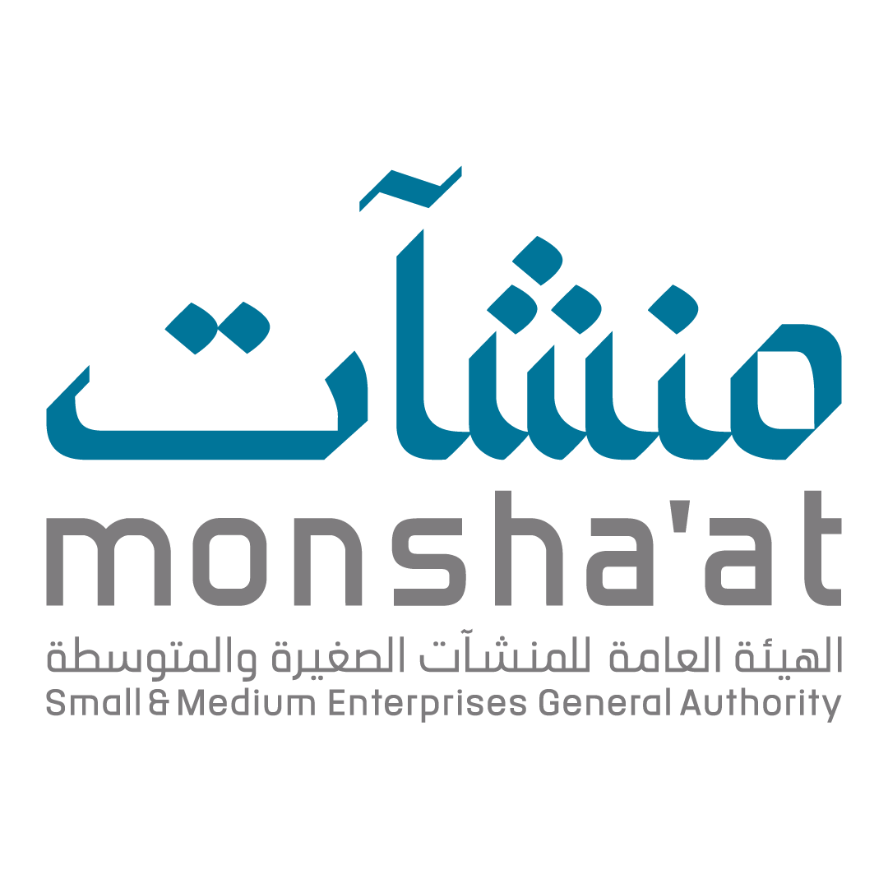
منشآت · Monsha'at (Small and Medium Enterprises General Authority)
monshaatbusiness
source
No own careers page; site links to its Jadarat entity profile https://jadarat.sa/EntityProfile?EntityId=TDJueG9CYVVHbjg9&JobType=3&Param=3&RouterId=ekg2ekxTVE5NQ2s9 (not opened; Jadarat is script-only)
هيئة منشآت
هيئة المنشآت الصغيرة والمتوسطة
monshaat
monsha'at
alone: منشآت، منشات
About line trimmed from the home meta description. «منشآت» = 'establishments' -> aliasesAlone.
الوطنية للإسكان · National Housing Company (NHC)
nhcbusiness
—
www.nhc.sa/ar -> 403 Cloudflare 'Just a moment...'; skipped. careers.nhc.sa does not resolve
الوطنية للإسكان
national housing company
nhc
fields inferred
Own site behind Cloudflare: Arabic name is the public name, NOT verified on its own site. No bare «الإسكان» alias, per instructions.
ESL FACEIT · ESL FACEIT Group
efgpostings
source
200; careers page embeds Greenhouse board eslfaceitgrouplimited; 22 openings, 1 in Riyadh (Procurement Manager)
إي إس إل
فيس إت
esl faceit group
esl
faceit
efg
No Arabic site (eslfaceitgroup.com/ar/ is 404); Arabic name «مجموعة ESL FACEIT» as written on Savvy's Arabic page (its parent). Arabic transliterations in aliases are my spelling. Mostly non-Saudi roles.
مانجا للإنتاج · Manga Productions
manga-productionsbusiness
source
200; 'Join Manga Team / Yes, we are hiring' page with recruitment process, no openings listed (apply by email)
شركة مانجا للإنتاج
مانجا للانتاج
manga productions
manga.com.sa
alone: مانجا
«مانجا» = mango / manga comics -> aliasesAlone.
MBC · MBC Group
mbcbusiness
source
200; careers page links to its Oracle Careers Portal (ehff.fa.em2.oraclecloud.com, site CX_2001); API shows 5 openings, 1 in Riyadh
إم بي سي
مجموعة ام بي سي
قنوات mbc
mbc
mbc group
Logo is the apple-touch-icon mark (black 'mbc' glyph); the header SVG is white-only.
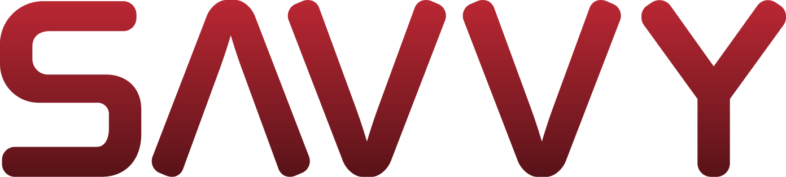
سافي · Savvy Games Group
savvy-gamesbusiness
source
200; Oracle Recruiting board linked from savvygames.com; its public API (siteNumber CX_1009) returns 0 open jobs
سافي للألعاب
مجموعة سافي للألعاب الإلكترونية
savvy games
savvy games group
savvy
Arabic name from its Arabic footer «© 2026 مجموعة سافي للألعاب الإلكترونية». savvygames.com/careers is 404; the Oracle link is in its menu. Parent of ESL FACEIT Group and Scopely.
SRMG · Saudi Research and Media Group (SRMG)
srmgbusiness
source
200; 'SRMG Career JobPortal' (script-only app), linked from srmg.com; roles not read
السعودية للأبحاث والإعلام
الأبحاث والإعلام
srmg
saudi research and media group
About line condensed from two sentences of its Arabic home page. No logo: header logo is white-only, favicon 32 px.